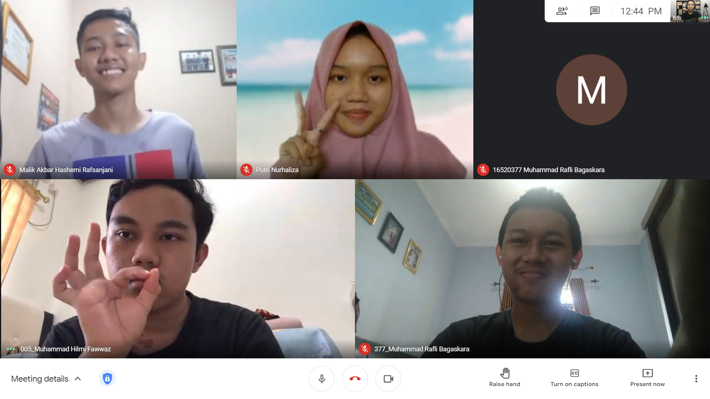

Ca-Kru pertama adalah Muhammad Hilmi Fawwaz dari angkatan 2020 dan jurusan STEI TPB. jurusan impiannya adalah Teknik Telekomunikasi. Hobbynya adalah tidur. Tujuan Hidupnya Menang emas pkm 2 kali dalam satu tahun. Berasal dari SMAIT Al Kahfi Bogor. Asal Daerah balikpapan dan lahir di Jakarta. Alasan masuk ARC karenaTugas menarik. Cerita Masuk ITB tiba tiba aja hijau. Keluh kesah selama di ITB udah belajar seharian pol, dapet nilai nomor sepatu. Cara ngehype diri sendiri dengan liatin linkedIn orang
Ca-Kru kedua adalah M Syahrul Surya Putra dari Angkatan 2020 Jurusan STEI. Jurusan Impian IF. Hobbynya Tiduran sambil dengerin musik. Tujuan Hidupnya Belum tau. Asal SMAN 1 Garut dan Asal Daerah Garut. Alasan masuk ARC karena Pingin nambahin soft skill di webdev. Cerita Masuk ITB Dari akhir SMP/awal SMA tau ITB itu bagus, jadi mau masuk. Keluh kesah selama di ITB Susah susah “masuk” ITB, tapi mau masuk beneran gk bisa. Cara menghype diri sendiri Ingetin diri sendiri, “kalau orang lain bisa, kenapa gua gk bisa”.
Ca-Kru ketiga adalah Putri Nurhaliza dari Angkatan 2020 Fakultas STEI. Jurusan Impian IF Hobinya budak kucing. Tujuan Hidupnya adalah Bahagia. Asal SMA N 8 Ternate dan Asal Daerah Ternate. Alasan masuk ARC karena Pengen belajar bikin web. Cerita Masuk ITB Punya beberapa temen (kating) di ITB dan keliatan keren, yaudah nekat deh nyoba daftar ITB. Keluh kesah selama di ITB nguras otak, tenaga, dan waktu. Cara ngehype diri sendiri cukup ngomong “gwenchana gwenchana”.
Ca-Kru keempat yaitu saya sendiri Muhammad Rafli Bagaskara dari Angkatan 2020 Jurusan STEI. Jurusan Impian yaitu Informatika. Hobby saya Rebahan Tujuan hidup saya adalah Sukses dunia akhirat Asal SMAN 1 Tambun Selatan dan Asal Daerah Bekasi. Alasan masuk ARC karena Pengen buat website keren. Cerita Masuk ITB yaitu Cuma tuhan dan pihak ITB yang tau kenapa mau nerima diriku. Keluh kesah selama di ITB Sangat melelahkan. Cara ngehype diri sendiri ingetin diri sendiri tanggung jawab udah milih ITB.
Ca-Kru kelima yaitu Malik Akbar Hashemi Rafsanjani dari Angkatan 2020 Jurusan STEI. Jurusan Impian belum tau. Hobbynya futsal. Tujuan hidupnya belum tau juga. Asal SMAN 1 Surakarta dan Asal Daerah Solo. Alasan masuk ARC karena Pengen belajar mbuat web. Cerita masuk ITB Diajakin kakak kelas SMA, katanya bagus. Keluh kesah selama di ITB tugas-tugasnya mbuat keos banget. Cara ngehype diri sendiri ingetin diri sendiri, kalo emg penting dan bisa dicapai yaa harus dicapai.
